RTXGI-DDGI · 本地仓库 v1.3
从全局光照的问题出发，逐步推导到 DDGI 的完整实现。 假定读者没有光线追踪或渲染的前置知识，所需内容在正文中给出。 文中数值均标注来源；作者自行计算的部分单独注明。
从一个采样点要存储什么开始，依次回答：这个量是什么、怎么求出来、 怎么参数化到二维、怎么在探针之间重建、以及可见性如何判断。 全部结论只依赖球面几何与蒙特卡洛估计，不涉及 GPU 资源。
渲染一个像素，即求从该着色点沿视线方向射出的光量。表面自身不发光， 射出的是它反射的光，所以需要先确定该点接收到的光量。
接收到的光分为两类：
直接光的计算方式是自着色点向光源投射一条光线，根据是否被遮挡判断明暗。 单次光线求交即可完成。
间接光则不然。要计算地板从墙面接收的光量，需要先知道墙面上每一点接收的光量。 而墙面的光又来自地板、天花板，以及其他所有表面之间的相互反射。
这是一个递归问题，没有直接解法。
能说明直接光与间接光的区别，以及间接光为何构成递归。
离线渲染采用路径追踪求解该递归：自相机投射一条光线击中表面后，随机选取半球方向继续追踪， 多次弹射直至命中光源，累加沿途的光量。
该方法的估计量是无偏的，但单条路径只是全部可能路径中的一次采样， 其结果与该点的期望值之间方差极大。通常需要数百至数千条路径求平均，图像才能收敛。
离线渲染单帧可耗时数小时，这一代价可以接受。实时渲染的单帧预算约为 16 毫秒， 两者相差约六个数量级。
因此实时渲染需要一条不同的路径：不精确求解，而是以可控的误差换取速度。
能说明路径追踪的方差来源，以及实时与离线的算力差距。
先考虑一个几何事实：常见的墙面材质是漫反射的。
一束光射到漫反射表面上，会向各个方向均匀散射。这意味着桌面上一点接收到的间接光 来自整面墙，而非墙上某个确定的点。
因此在空间上，间接光的分布是平滑的：不存在高频细节，只有缓慢变化的亮度梯度。
既然被求解的函数本身平滑，就没有必要逐像素精确求解。可以用稀疏的采样点记录该函数， 在采样点之间插值。
一个类比：测量房间的温度分布，不需要在每一个点放置温度计。 放置若干温度计，其余位置插值即可 —— 前提是温度在空间上平滑变化。
「稀疏采样 + 插值」并非 DDGI 提出。基于预计算辐照度探针的方法 （Enlighten、Unity、Unreal Engine 中均有实现）早已采用这一思路。
DDGI 的贡献在于使该思路适用于动态场景 —— 即探针数据不必预计算， 可以在运行时更新。这是第 07、08 章的内容。
来源：docs/Algorithms.md
能说明间接光为何是低频信号，以及该性质为何允许稀疏采样。
设空间中存在一个采样点 P。若有一表面经过 P，需要确定它接收到的光量。
该问题没有唯一答案，因为答案取决于表面的朝向。同一位置， 法线朝左的墙面与法线朝上的地板接收到的光量不同：前者看不到天花板与灯具，后者可以看到。
因此单个采样点不能只存储一个数值。它需要记录的是：
在 P 点，法线取各个方向时，分别接收多少光。
这是一个定义在球面上的函数。物理量名称为 irradiance（辐照度）：
各项含义：
光线斜射到表面上时，单位面积接收的能量更少。一束截面固定的光正对表面时形成圆形光斑， 斜射时同一束光被拉长为椭圆，覆盖更大面积，因此单位面积上的能量密度降低。 余弦项即描述这一效应。
| radiance L | irradiance E | |
|---|---|---|
| 定义 | 沿一条光线的光强 | 一点接收的光量总和 |
| 方向性 | 沿光线方向 | 不沿方向，但依赖法线 |
| 单位 | W/(m²·sr) | W/m² |
| 来源 | 光线追踪直接给出 | 需对 radiance 积分 |
光线追踪的结果始终是 radiance。DDGI 所做的是把 radiance 积分成 irradiance 并存储， 供后续着色查询。
能说明 radiance 与 irradiance 的区别，以及探针为何必须存储球面函数。
探针存储的球面函数不是直接观测得到的 —— 它由探针自身投射光线，再把结果积分而来。 本章说明这个过程：光线如何选取、返回值是什么量、以及如何从这些量得到第 03 章定义的 irradiance。
每个探针沿球面上一组方向投射光线，每条光线有两种结果：
这组方向由球面斐波那契序列（spherical Fibonacci）给出， 目标是在球面上尽量均匀地放置 N 个点。 均匀程度直接决定估计量的方差：分布不均时，某些方向被反复采样， 另一些方向几乎没有采样。
直接的做法是按极角与方位角各取等分，即经纬度网格。但角度等分不等于面积等分。 极角接近 0 或 π 时，相同的方位角间隔对应的球面弧长按 sin θ 收缩， 点于是向两极堆积。
用最近邻角距可以量化这一差异。在球面上各取 180 个方向：
| 取点方式 | 最近邻角距最小值 | 最大值 | 最大 / 最小 |
|---|---|---|---|
| 经纬度网格 | 3.11° | 15.00° | 4.8 |
| 球面斐波那契 | 13.23° | 14.88° | 1.1 |
数值为作者按两种取点方式计算
理想情况下每个点的最近邻距离都相同。球面斐波那契把这一差距压到 1.1 倍以内， 经纬度网格则相差近 5 倍。
要让点在球面上均匀，需要让每个点"分到"相同的球面面积。 球面上介于 z 与 z+dz 之间的球带，面积为 2π dz， 与 z 本身无关。
这一点可以直接算出：面积元 dA = sin θ dθ dφ， 代入 z = cos θ 得 dA = dz dφ， 对 φ 积满一圈即得 2π dz。 对半径 1 的球，z 从 −1 积到 1 恰好得到 4π，即球的表面积。
因此只要把 z ∈ [−1, 1] 等分成 N 层，每层面积自动相等：
取每层的中点而非端点，避免点正好落在分层边界上。 注意两极（z = ±1）不会被取到。
极角定下来后，每一层恰好放一个点，方位角还需要逐点错开，否则点会排成一条经线。 设方位角按固定步长 α 递增，则 α 的取值决定成败。
若 α 是 2π 的有理数倍，即 α = 2π pq， 则方位角只能取 q 个离散值，点会落在一组固定的经线上，表现为放射状的辐条。 步长必须取无理数倍，并且要"足够无理"。
DDGI 使用的步长是黄金角：
其中 φ = (1 + √5) / 2 ≈ 1.6180339887 是黄金比。选择它的理由属于数论： φ 的连分数展开为 [1; 1, 1, 1, …]，每一项都是最小值 1， 这使它的收敛速度在所有无理数中最慢。由 Hurwitz 定理，φ 是最难被有理数逼近的无理数。 直观地说，i / φ 的小数部分在任意步数下 都不会向少数几个值聚拢。
下图在球面上演示：极角一律按 z 等分，三个球面取同样多的方向， 差别只在方位角的步长。
中图与左图只差 0.36°。取 8/21 并非随意：它是黄金角的连分数收敛项， 即分母不超过 21 的有理数中最接近黄金角的那个。常用的近似值 137.5° 记为分数是 2π·55/144，周期为 144，因此点数不超过 144 时看不出差别 —— 这只是余量，不是可以随意取整的理由。
把点按序号依次生成，可以看到点是一层层铺开的：
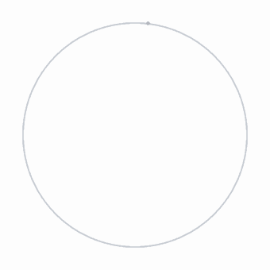
两个坐标合起来，第 i 个方向在球坐标下为：
再转为直角坐标：
仓库中的实现（rtxgi-sdk/shaders/Common.hlsl:55-63）：
float3 RTXGISphericalFibonacci(float sampleIndex, float numSamples)
{
const float b = (sqrt(5.f) * 0.5f + 0.5f) - 1.f; // 1/φ ≈ 0.618034
float phi = RTXGI_2PI * frac(sampleIndex * b); // 方位角，每步 +2π/φ
float cosTheta = 1.f - (2.f * sampleIndex + 1.f) * (1.f / numSamples);
float sinTheta = sqrt(saturate(1.f - (cosTheta * cosTheta)));
return float3((cos(phi) * sinTheta), (sin(phi) * sinTheta), cosTheta);
}
逐项对应：
sqrt(5.f) * 0.5f + 0.5f 即 φ，减 1 得到
b = 1/φ ≈ 0.6180339887。
frac(sampleIndex * b) 取小数部分，等价于对 2π 取模，得到方位角。
cosTheta 就是上面的 z。
这样命名是因为 z = cos θ。
sinTheta = √(1 − z²)，
即该层在 xy 平面上的半径。
代码用的是 1/φ 而不是 1/φ²，步长为 2π/φ ≈ 222.49°。 由于 1/φ + 1/φ² = 1，两者只差一个符号：得到的是同一组点，绕行方向相反。
光线数量由编译期宏 RTXGI_DDGI_BLEND_RAYS_PER_PROBE 指定，
无默认值。文档中的内存计算示例使用 256 与 128。Test Harness 的 Cornell 场景使用 256。
来源：docs/DDGIVolume.md:380-381、617、634；samples/test-harness/config/cornell.ini:97
另有 RTXGI_DDGI_NUM_FIXED_RAYS，默认为 32。
其中一部分光线的方向固定不变，不参与 irradiance 混合，专门用于 relocation 与
classification 的稳定性判断，详见第 13 章。
来源：rtxgi-sdk/shaders/ddgi/include/Common.hlsl:39；docs/DDGIVolume.md:761-767
两类光线各用一套独立的斐波那契序列，而不是从同一套中取前 32 个：
固定光线按 RTXGISphericalFibonacci(rayIndex, 32) 生成，
其余光线按 RTXGISphericalFibonacci(rayIndex − 32, probeNumRays − 32) 生成。
随后只有非固定光线会被一个每次更新都变化的随机旋转作用，
使多次更新累积的结果覆盖到比单帧更多的方向。
来源：rtxgi-sdk/shaders/ddgi/include/ProbeRayCommon.hlsl:113-134
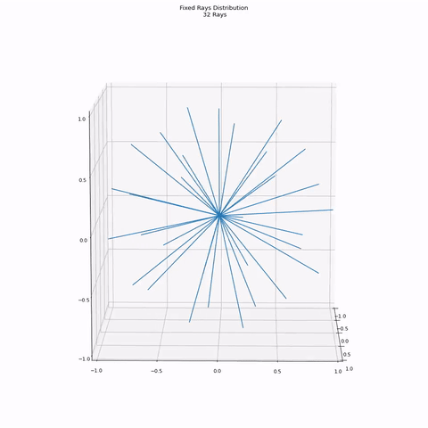
来源：docs/images/ddgivolume-fixedRays.gif；docs/DDGIVolume.md:767
固定光线以外的光线，方向在每次更新时都会被一个随机旋转整体转过去。
旋转量在 DDGIVolume::Update() 中重新生成
（DDGIVolume.cpp:104-110）：取三个均匀随机数，
按 James Arvo 在 Graphics Gems 3 中给出的方法构造旋转矩阵，
所得旋转在 SO(3) 上均匀分布。
来源：rtxgi-sdk/src/ddgi/DDGIVolume.cpp:440-482；docs/DDGIVolume.md:665-671
需要这一步，是因为斐波那契序列是确定性求积规则，而不是随机采样。 若每次更新都用同一组方向，那么由方向选取带来的积分误差就是一个固定的系统性偏差， 时间累积无法把它平均掉 —— 累积只会让这个偏差稳定下来。 把整组方向随机转过后，每次更新的偏差方向不同，多帧之间才有机会相互抵消。
时间累积的等效窗口约为 1/(1 − h) 次更新，h = 0.97 时约 33 次（见第 11 章）。 也就是说，参与平均的方向数量约为单帧的 33 倍。
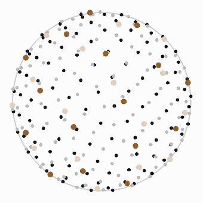
若 relocation 与 classification 都未启用，则不存在固定光线，
所有光线的方向都会被旋转（ProbeRayCommon.hlsl:119-124）。
光线追踪本身不由 DDGI SDK 实现。SDK 只规定从哪个探针、沿哪些方向投射光线。 实际的光线求交与命中着色由宿主渲染器使用其自身的加速结构与着色器完成。
这也是 DDGIVolume_D3D12.cpp（1778 行）中不含算法的原因 ——
该文件是图形 API 的管线代码。
来源：docs/Integration.md:56-72
能说明探针光线的两种结果，以及 SDK 与宿主渲染器在光线追踪上的分工。
得到 N 条光线的 radiance Li 与方向 ωi 后，需要把它们累积成球面上的函数。
对球面上的每个方向 ωt， 它代表「表面法线朝向该方向」的情形。该方向对第 i 条光线的权重为：
即光线方向与该方向夹角的余弦。累积量为 Σ(Li·wi) 与 Σwi，最后相除。
待求量为 E = ∫ L·cos dω。 采用蒙特卡洛估计，均匀采样 N 个方向，概率密度 pdf = 1/(2π)（半球总立体角为 2π）：
这些方向如何排布进二维纹理，见第 05 章。该式与
docs/Math.md 中的方程 3 一致，
也是代码在读取时需要乘回 2π 的原因（Irradiance.hlsl:195）。
严格来说每个方向应存储 (1/N)·Σ(Li cosi)。 但 N 是固定的，cos 随方向变化。DDGI 做了如下替换：半球上均匀分布方向的余弦平均值为 1/2，因此
于是分母 N 可替换为 2Σcosi：
这样做的收益是分母具有自适应性：某个方向上采样较少时（Σcos 小），分母同步减小， 不会因采样不足而系统性偏暗。
代码注释对此的说明（ProbeBlendingCS.hlsl:496-498）：
To match the Monte Carlo Estimator of Irradiance, we should divide by N. Instead, we are dividing by sum(cos(theta)) to reduce variance. To account for this, we must multiply in a factor of 1/2.
距离图采用普通平均，理论上不应除以 cos 权重。但代码为避免增加分支，
同样除以了 2（ProbeBlendingCS.hlsl:499-502）。
因此读取距离值需要乘回 2 —— 这是 Irradiance.hlsl:138 中
2.f * 的来源。
这类为减少 GPU 分支而牺牲可读性的写法在该代码库中多处出现。 遇到与推导不符的常数时，对应注释通常会给出解释。
能说明 2π 的来源、除以 Σcos 而非 N 的理由、以及距离值为何需要乘回 2。
探针需要为每个方向存储一个数值，即存储一个定义在球面上的函数。 GPU 纹理是二维的，因此需要先把球面参数化到平面上。
DDGI 采用八面体映射。该映射由两步复合而成： 先把方向向量径向投影到正八面体表面，再把八面体展开为正方形。
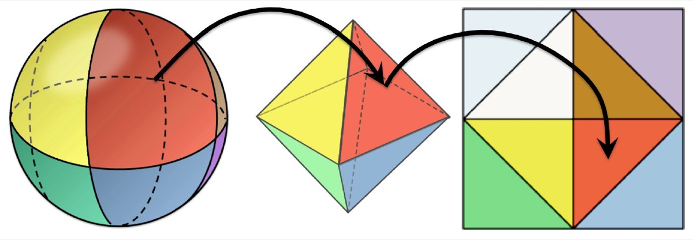
来源：docs/images/ddgivolume-octahedral-param.jpg
这一步与 L1 范数有关。单位球面有两种定义：
因此按 L1 范数归一化，几何上等同于求自原点出发的射线与八面体表面的交点：
该映射是双射：每个方向对应八面体表面唯一一点，反之亦然。 八面体共 8 个面，每个面对应一个八分体（octant）。
float l1norm = abs(direction.x) + abs(direction.y) + abs(direction.z); float2 uv = direction.xy * (1.f / l1norm);
代码只取 x、y 两个分量。 由于投影点满足 |x|+|y|+|z| = 1， z 可由前两者推出，是冗余的。
来源：rtxgi-sdk/shaders/ddgi/include/ProbeOctahedral.hlsl:64-73
八面体的 8 个面均为等边三角形。将其剪开摊平到正方形 [-1,1]²：
翻折所用公式为：
uv = (1.f - abs(uv.yx)) * RTXGISignNotZero(uv.xy);
uv.yx 为分量交换（swizzle），故第一项取到的是
|py|。
以 (+,+) 八分体为例，该公式即关于直线 u + v = 1 的镜像反射。 平面上将点 (a, b) 关于直线 x + y = 1 反射，结果正是 (1 − b, 1 − a)。
反射是唯一能保证接缝处不产生方向跳变的选择。验证如下： 接缝处 z = 0，此时 |px| + |py| = 1， 于是
即翻折公式在接缝处退化为恒等式，与上半球分支给出相同结果。 因此映射在整个定义域上方向连续（C⁰），跨接缝采样不产生跳变。
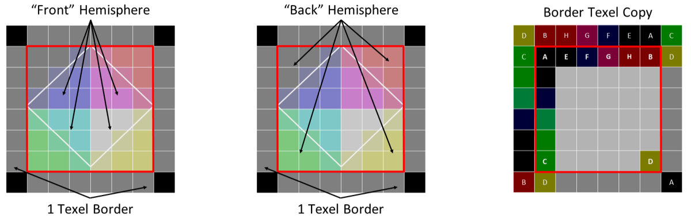
来源：docs/images/ddgivolume-octahedral-border.png
反向操作把正方形上的点还原为方向：
float3 direction = float3(coords.x, coords.y, 1.f - abs(coords.x) - abs(coords.y));
if (direction.z < 0.f)
{
direction.xy = (1.f - abs(direction.yx)) * RTXGISignNotZero(direction.xy);
}
return normalize(direction);
normalize() 把八面体表面的点投影回球面。第 2 步与正映射使用同一公式，因为镜像反射是对合变换（连续应用两次回到原处）。
来源：rtxgi-sdk/shaders/ddgi/include/ProbeOctahedral.hlsl:49-57
任何球面到平面的参数化都必然引入畸变，八面体映射也不例外。 原因可以直接看出：八面体的面是等边三角形（边长 √2）， 而展开到平面上得到的是等腰直角三角形（直角边 1）。 等边三角形无法等距地展平到平面上。
畸变的度量是参数化的雅可比行列式：
它表示参数平面上单位面积对应球面上多少立体角。数值结果如下：
| 位置 | J | 说明 |
|---|---|---|
| (0, 0) 面心 | 1 | 取到最小值。此处球面与八面体面相切 |
| (1, 0) 菱形顶点 | 1 | 同样取到最小值 |
| (⅓, ⅓) 三角形重心 | 3√3 ≈ 5.196 | 取到最大值 |
| 单个八分体三角形均值 | π ≈ 3.142 | (π/2) ÷ (1/2)：球面八分体面积除以参数三角形面积 |
重心处的值可手算验证：p = (⅓, ⅓, ⅓)， |p| = 1/√3，两个偏导数形式相同， 叉积模长为 √27 = 3√3。
| 参数化方式 | J 的范围 | max / min |
|---|---|---|
| 八面体映射 | [1, 3√3] | 3√3 ≈ 5.20 |
| Cube map | [√3/9, 1] | 3√3 ≈ 5.20 |
| 等距柱状投影 | (0, 1] | 无界（两极趋近 0） |
作者计算，未见于仓库文档。
「八面体映射的面积畸变比 Cube map 小」并不成立。 两者的畸变比值相同，均为 3√3。
八面体映射的实际优势在下一节，与畸变无关。
既然畸变不占优势，选择它的理由有以下三点：
z < 0 分支。
Cube map 需要判断主轴并处理 6 种情况，分支开销更高。
换言之，八面体映射换取的是实现上的简洁，而非数学上的最优。 在畸变这一指标上它与 Cube map 持平。
能说明 L1 归一化的几何含义、展开公式为何是反射、以及八面体映射相对 Cube map 的实际优势。
单个探针不足以描述整个场景 —— irradiance 在空间上同样存在变化。 因此需要在空间中布置三维网格的探针。
网格的密度与范围由两个参数决定：probeCounts（各轴探针数）与
probeSpacing（探针间距，单位米）。这两个参数均由应用指定，SDK 不提供默认值。
仓库文档给出的建议是典型场景下每 2–3 米一个探针。
来源：docs/DDGIVolume.md:799
Test Harness 中的实际配置可作为参考：
| 场景配置 | probeCounts | probeSpacing | 探针总数 |
|---|---|---|---|
| cornell.ini | 9 9 9 | 0.3 m | 729 |
| multi-cornell.ini | 9 9 9 | 0.75 m | 729 |
| two-rooms.ini | 32 6 32 | 11 m | 6144 |
来源：samples/test-harness/config/*.ini:95-96 / 71-72 / 85-86
此处包含两次插值，作用的维度不同：
最终得到的是位置与法线的连续函数。
能说明两次插值各自作用的维度，以及探针密度由哪两个参数决定。
探针网格是规则排列的，场景几何则不是。这个不匹配会导致两类错误。
探针恰好位于墙体内部时，它记录的是墙体内部的光照，结果完全错误。 该问题由 relocation 处理，见第 13 章。
设一条走廊，走廊与相邻房间之间有一堵墙。对走廊表面着色时， 三线性插值会把相邻房间一侧的探针也纳入计算。
但相邻房间的光不应照射到走廊，两者之间隔着墙。 问题在于探针只存储了 irradiance，不包含任何关于遮挡物是否存在的问题， 插值时无法排除隔着墙的探针。
结果是墙面对邻近房间的光照呈透明状，即所谓漏光（light leaking）。
上述问题在预计算光照探针方案中同样存在，且多一层限制：探针数据在烘焙时确定， 运行时无法反映场景变化。
门被关上、箱子被移入，探针记录的仍是烘焙时刻的状态。更新需要重新烘焙， 耗时在分钟到小时量级。
能说明漏光的成因，以及预计算探针为何无法处理动态场景下的漏光。
DDGI 的解法是：除 irradiance 之外，为每个探针再存储一张分辨率相同的距离图。
距离图的每个方向记录两个量：
纹理混合是线性运算。混合相邻探针时，参与混合的量必须可加。
平方的平均满足可加性，混合结果仍是正确的平均值。方差不满足可加性。 因此存储前者，方差在读取时现算。
有了距离图，查询时可以执行如下判断：
设着色点为 P，待查询的探针为 G， 两点相距 3 米。
查询 G 的距离图， G 朝 P 方向的平均命中距离为 0.5 米。
即 G 沿该方向 0.5 米处即被遮挡，而 P 位于 3 米处，两者之间必然存在遮挡物。 该探针的 irradiance 不应计入 P 的着色。
该判断完全基于运行时数据。场景中的遮挡关系发生变化时，光线追踪结果随之更新， 距离图同步更新，遮挡判断自动反映新状态，不涉及任何预计算。
能复述上述遮挡判断，并说明该方法为何天然适用于动态场景。
第 08 章的判断是二值的：距离超出平均命中距离即判断为遮挡。 直接采用二值判断会产生两个问题。
因此需要一个平滑的、且能反映不确定性大小的权重。Chebyshev 不等式给出了这样的形式：
其中 d 为着色点到探针的距离， μ 为该方向的平均命中距离， σ² 为该方向距离的方差。
该式给出真实距离大于 d 的概率上界， 取值位于 [0, 1]，可直接作为权重使用。它的三个性质恰好满足需求：
代码位于 Irradiance.hlsl:145-153。方差在
:141 由均值与平方均值现算，取绝对值是为避免浮点误差导致负值。
距离图的分辨率通常高于 irradiance 图。Test Harness 的 Cornell 场景使用 8×8 的 irradiance 图和 16×16 的距离图。
原因是 irradiance 是低频信号，粗糙采样即可。而 Chebyshev 判断依赖距离分布的准确性， 需要更高分辨率。该差异也可在内存开销上得到解释：距离图是每个探针占用显存最多的资源。
来源：samples/test-harness/config/cornell.ini:98-99；docs/DDGIVolume.md:617-634
能说明二值判断的两个问题，以及 Chebyshev 权重如何同时缓解它们。
算法落到 GPU 上的部分：数据在显存中的排布、逐帧累积的策略、 以及为控制成本与伪影而加入的三项优化。
前九章讨论的是算法本身：球面上的 irradiance 如何求、如何参数化、如何跨探针重建。 本章转入实现层面 —— 这些数据在显存中如何排布，以及一次查询如何算出它要读的地址。
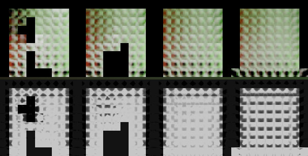
来源：docs/images/ddgivolume-textures-atlases.jpg
一个探针在显存中不是单个数值，而是一小块二维图像 —— 即第 05 章的八面体图。 因此探针数据有三层嵌套：三维网格、切片内的探针排布、以及单个探针内部的八面体纹素。
DDGI 使用 Texture2DArray 存储探针数据，即尺寸相同的一组二维纹理叠放。
三维探针网格沿竖直轴被切成若干层，每层对应一张切片：
网格坐标到探针索引的换算（Y 轴向上时）：
每个探针在切片内占据一个 numProbeTexels × numProbeTexels 的方块，其中 numProbeTexels = 内部纹素数 + 2，多出的两圈是 1 纹素边界。
以 Cornell 场景的配置为例（probeCounts = 9 9 9）：
| irradiance 图 | distance 图 | |
|---|---|---|
| 内部纹素数 | 8 × 8 | 16 × 16 |
| 单个探针的方块 | 10 × 10 | 18 × 18 |
| 一张切片的尺寸 | 90 × 90 | 162 × 162 |
| 切片数 | 9 | 9 |
来源：samples/test-harness/config/cornell.ini:95,98,99； 方块尺寸由 numProbeTexels = 内部纹素数 + 2 推算
一个具体的索引换算，取网格坐标 (gx, gy, gz) = (2, 4, 6)：
probeIndex = 4 × 81 + 6 × 9 + 2 = 380 反解： 切片索引 = 380 / 81 = 4 // 即 g_y 切片内 x = 380 % 9 = 2 // 即 g_x 切片内 y = (380 / 9) % 9 = 6 // 即 g_z
注意切片内第二个轴的映射关系：网格的 gz
对应切片内的 y 方向，而非 x 方向。该映射随坐标系约定而变，
代码中对 Y 轴向上与 Z 轴向上分别有不同分支（ProbeIndexing.hlsl:112-124）。
采样的最后一步是把方向变成纹理坐标。第 05 章的正映射只给出探针内部的相对位置， 还需要叠加上探针在切片中的位置，才能得到整张纹理上的绝对 UV。
两个采样使用的方向并不相同：
-biasedPosToAdjProbe（取反是因为该变量存的是着色点指向探针的方向）。
来源：rtxgi-sdk/shaders/ddgi/Irradiance.hlsl:132（距离图）、:174（irradiance 图）
两次采样调用同一个换算函数 DDGIGetProbeUV，区别只在传入的纹理分辨率。
它把八面体坐标 [-1, 1]² 依次映射到方块中心、方块内部、整张切片：
uint3 coords = DDGIGetProbeTexelCoords(probeIndex, volume); // 探针在切片内的方块坐标 numProbeTexels = numProbeInteriorTexels + 2; // 方块边长 = 内部 + 两侧边界 uv = float2(coords.x, coords.y) * numProbeTexels // 方块左上角 + numProbeTexels * 0.5f; // 移到方块中心 uv += octantCoordinates * (numProbeInteriorTexels * 0.5f); // 按八面体坐标偏移 uv /= float2(textureWidth, textureHeight); // 归一化为 [0, 1] return float3(uv, coords.z); // z 分量即切片索引
来源：rtxgi-sdk/shaders/ddgi/include/ProbeIndexing.hlsl:212-236； 切片尺寸 textureWidth / textureHeight 在 :220-229 按坐标系分支给出
关键在第三步的缩放系数：八面体坐标的范围是 [-1, 1]， 乘以 interiorTexels / 2 之后恰好铺满内部区域。 方块中心位于距左上角 numProbeTexels / 2 个纹素处， 两个量相差一个纹素，正是外圈边界所占的宽度。
| 八面体坐标 | 落在方块内的位置 |
|---|---|
| (0, 0) | 方块中心，距左上角 numProbeTexels / 2 个纹素 |
| [-1, 1] | 中心 ± interiorTexels / 2 个纹素，恰好铺满内部区域 |
| 范围之外 | 1 纹素边界，仅被双线性过滤的取样核触及 |
一个具体的算例。取表面法线 n = normalize(1, 1, 0)， 探针网格坐标 (gx, gy, gz) = (2, 4, 6)， Cornell 配置（probeNumIrradianceInteriorTexels = 8）：
第一步：正映射，方向 → 八面体坐标 l1norm = 0.7071 + 0.7071 + 0 = 1.4142 uv = (0.7071, 0.7071) / 1.4142 = (0.5, 0.5) z = 0，不小于 0，不需要折叠 → (0.5, 0.5) 第二步：探针索引 → 方块坐标 probeIndex = 380，反解得方块坐标 (x, y, 切片) = (2, 6, 4) 第三步：方块坐标 + 八面体坐标 → UV numProbeTexels = 8 + 2 = 10 切片尺寸 = 10 × 9 = 90 方块左上角 (2 × 10, 6 × 10) = (20, 60) 移到方块中心 + (5, 5) = (25, 65) 八面体偏移 + (0.5, 0.5) × 4 = (27, 67) 归一化 / (90, 90) = (0.300, 0.744) 采样坐标 = (0.300, 0.744, 4)
距离图的换算完全相同，只是传入 probeNumDistanceInteriorTexels：
内部 16 × 16、方块 18 × 18、切片 162 × 162，偏移量为
(0.5, 0.5) × 8。两张纹理共用同一个双线性采样器。
传入的方向不需要预先归一化：正映射除以 L1 范数，对正数缩放不变
（ProbeOctahedral.hlsl:64-73）。代码中传入的向量已是单位向量。
单帧投射的光线数量远不足以得到收敛的 irradiance。因此 DDGI 跨帧累积：
其中 h 即 probeHysteresis 参数，
是旧值的权重。Test Harness 的场景配置使用 0.97。
来源：rtxgi-sdk/shaders/ddgi/ProbeBlendingCS.hlsl:534；samples/test-harness/config/cornell.ini:100
h 越大，画面越稳定，但对光照变化的响应越慢。 h 越小则相反。
实现中并非始终使用固定的 h，有两处例外：
来源：rtxgi-sdk/shaders/ddgi/ProbeBlendingCS.hlsl:520-530
此外，低精度纹理格式下相邻两次混合的差值可能小于格式可表示的最小值， 导致收敛停滞。代码对此设置了最小步长（10 位格式的阈值为 1/1024）以保证收敛。
来源：rtxgi-sdk/shaders/ddgi/ProbeBlendingCS.hlsl:535-543
时间累积带来的固有代价是延迟：光照或物体变化后需要若干帧才能反映到最终画面。 这是该方法的固有限制，仓库文档将其列为 DDGI 的局限之一。
来源：docs/Algorithms.md
能说明时间累积的公式、probeHysteresis 的语义，以及它换取的代价。
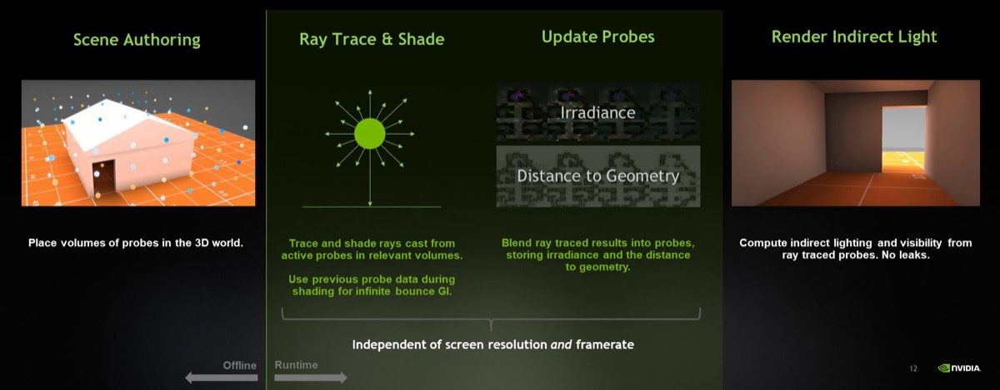
来源：docs/images/rtxgi-ddgi-algorithm.jpg（NVIDIA GDC 演示材料）
能不参照上图，分别复述更新侧与查询侧的完整流程。
以下各项属于实现层面的优化，不涉及新的物理或数学内容。
处理第 07 章的第一类错误。
来源：docs/DDGIVolume.md:718-734
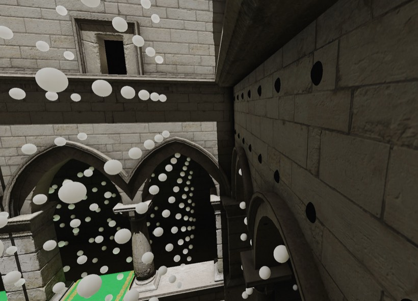
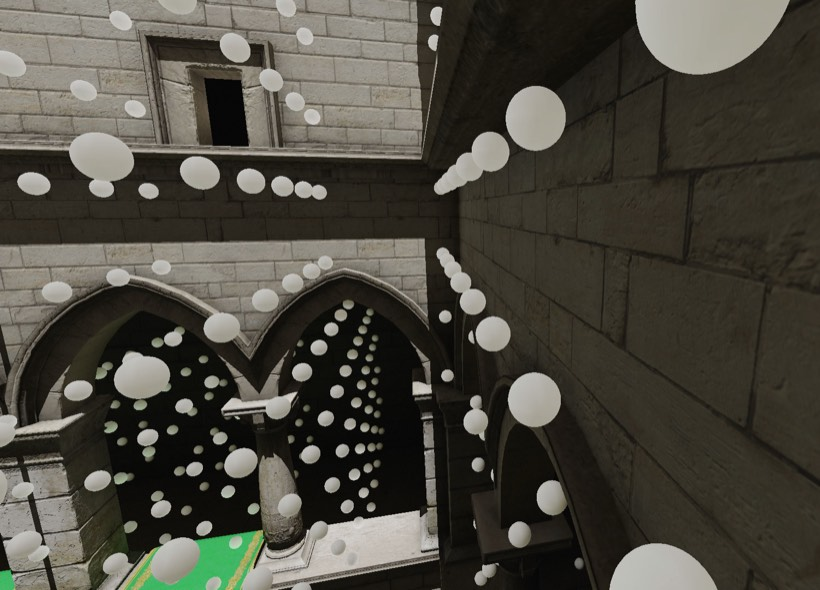
重定位并不计算"移到哪里最好"，而是从一个离散的候选集合里挑方向：
探针自己的固定光线命中结果。
DDGIProbeRelocationCS 遍历该探针的前 32 条光线
（numRays = min(probeNumRays, RTXGI_DDGI_NUM_FIXED_RAYS)），
统计背面命中数，并记录最近的背面命中、最近的正面命中、最远的正面命中，
各自的方向与距离。
来源：rtxgi-sdk/shaders/ddgi/ProbeRelocationCS.hlsl:140-191
这也解释了固定光线为何必须存在：方向和距离都取自这 32 条光线的命中结果， 如果它们每次更新都换朝向，选出来的方向就会不停跳动。
probeFixedRayBackfaceThreshold 时成立
（文档中写的 probeBackfaceThreshold 是旧名称）。
沿最近的背面命中方向移动，距离为该次命中距离加上
probeMinFrontfaceDistance 的一半。
背面命中意味着光线是从物体内部打到这个面上的，所以朝该方向走就是往外走。
probeMinFrontfaceDistance 时成立。沿最远的正面命中方向移动，
但需满足 dot(最近方向, 最远方向) ≤ 0 ——
两者大致反向，朝最远方向走才不会反而更贴近最近的那个面。
移动距离取 min(最远命中距离, 1.0)，既不穿过最远的面，
也不超过 1 个世界单位。
probeMinFrontfaceDistance 时成立。沿当前偏移的反方向退回，
距离取 min(最近距离 − 阈值, 当前偏移长度)，即最多退回网格原位。
来源：rtxgi-sdk/shaders/ddgi/ProbeRelocationCS.hlsl:193-221
后两种情形互补，覆盖了所有"不在几何体内部"的探针：离表面太近就离开， 否则就回收。因此一个被重定位过的探针，在周围变空旷之后会自己走回网格原位。
背面命中在写入光线数据时被存成 −hitT × 0.2：
取负是为了与正面命中区分，乘 0.2 是为了削弱这类探针在 irradiance 采样中的影响。
重定位读取时再乘回 −5，还原成真实距离。
来源：rtxgi-sdk/shaders/ddgi/include/ProbeRayCommon.hlsl:61-73；ProbeRelocationCS.hlsl:167
候选偏移写入前会做一次判断：按 probeSpacing 归一化后，
若长度平方小于 0.2025（即 0.45²）才接受，否则整次移动被丢弃，
探针保持原有偏移不变。
来源：rtxgi-sdk/shaders/ddgi/ProbeRelocationCS.hlsl:223-230
这一点与情形二的 1 个世界单位上限叠加时会产生一个后果：若
probeSpacing 本身较小，一次 1 单位的移动归一化后就会超出 0.45，
代码随即丢弃整次移动。例如 Cornell 配置的间距是 0.3 米，该场景中情形二基本不会生效。
文档建议的 2 至 3 米间距才是这条路径的正常工作区间。
用于减少无效计算。
部分探针不产生有效贡献：位于几何体内部的、周围没有几何体的、以及位于场景之外的。 这些探针被标记为休眠，跳过光线投射与纹理更新。
分类分两个阶段执行：
来源：docs/DDGIVolume.md:736-751
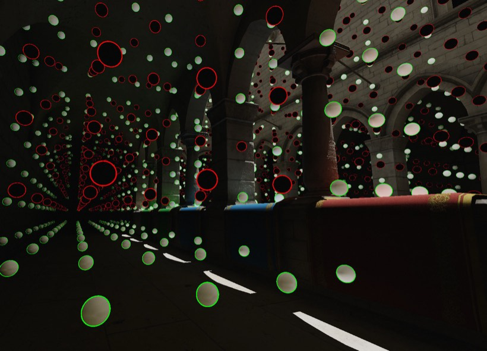
来源：docs/images/ddgivolume-classification-01.jpg
Relocation 与 classification 处理的是"探针位置不对"，variability 处理的是另一件事： 什么时候可以停下来。
探针的 irradiance 是逐次更新累积出来的估计值。即使已经累积了大量样本， 每个八面体纹素上仍然残留非零的方差 —— 某些纹素甚至可能永远无法完全收敛。 单帧看上去问题不大（估计值本身是合理的），但这些残差每次更新都在变， 表现为间接光里持续的低频噪声，在时间上就是可见的抖动。
如果能定量判断"这个 volume 的估计已经稳定了"，就可以暂停它的光线投射与混合更新， 把开销省下来。variability 就是这个量。
来源：docs/DDGIVolume.md:774-782
在 ProbeBlendingCS.hlsl 里，混合一个纹素时会用到三个值：
变异系数由后两者的逐通道乘积算出：
这个形式看不出含义，但代入混合公式就化简了。由于 sample − new = h (sample − old)，乘积等于 h (sample − old)2。再取亮度、开方、除以新值的亮度：
所以它度量的是：本次新样本与历史累积值之间的差距，相对于当前亮度的比例。 累积越充分，新样本越接近历史值，这个比值越小。光照发生变化时它会立刻抬升。 h = 0.97 时 √h ≈ 0.985， 基本就是"本次样本与历史值的相对偏差"。
来源：rtxgi-sdk/shaders/ddgi/ProbeBlendingCS.hlsl:513-561
两个细节：
1/1024 的纹素直接记 0，避免 0 除以 0。
probeBrightnessThreshold）或变暗时的最小步进，
lerpDelta 会被改写，等式不再严格成立。
不过这两个分支只在光照剧烈变化时才进入，那时 variability 本来就该升高。
变异系数是逐纹素算出来的，纹理布局与 irradiance 图相同。应用需要的是整个 volume 的一个标量，因此要经过多趟归约：
DDGIReductionCS：线程组为 4×8×4，每线程采样 4×2 个纹素。
组内求和后写入 ProbeVariabilityAverage 的一个纹素：
.r 是所覆盖纹素的均值，.g 是"实际计入的样本数 ÷ 可能的样本数"这一权重。
DDGIExtraReductionCS：把上一级的 (值, 权重) 对做加权平均，
输出尺寸逐级缩小，反复执行直到 1×1×1。循环由 CPU 侧的
CalculateDDGIVolumeVariability 驱动。
来源：rtxgi-sdk/shaders/ddgi/ReductionCS.hlsl:205-263、355-410； rtxgi-sdk/src/ddgi/gfx/DDGIVolume_D3D12.cpp:772-800
权重 .g 是必需的，不是可选的优化。纹理边缘的线程组覆盖不满，
而被 classification 判为休眠的探针还会被整块跳过。
跳过就发生在第 1 趟里：遇到休眠探针时把该样本记为 0 并 continue，
不计入分母。这正是权重存在的原因 —— 若按满额分母平均，
休眠探针越多，算出的变异系数就越偏低，收敛判断会提前触发。
当 volume 中所有探针都被禁用时，某个归约线程可能一个有效样本都没有。
早期版本在这种情况下会做一次 0/0 的除法。现在的代码要求
threadFootprintWeightSum > 0 才参与计算。
来源：ChangeLog.md:6；ReductionCS.hlsl:387
归约结果读回后由 GetVolumeAverageVariability() 暴露给应用。
Test Harness 的判断是：
const uint32_t MinimumVariabilitySamples = 16;
bool isConverged = volume->GetProbeVariabilityEnabled()
&& (numVolumeVariabilitySamples++ > MinimumVariabilitySamples)
&& (volumeAverageVariability < probeVariabilityThreshold);
if (!isConverged) selectedVolumes.push_back(volume);
来源：samples/test-harness/src/graphics/DDGI_D3D12.cpp:1240-1248
三个条件缺一不可：
被判为收敛的 volume 不会进入 selectedVolumes，
因此宿主连 Update() 都不会调用。而 Update()
正是重算光线随机旋转的地方 —— 暂停更新同时也冻结了旋转。
这是合理的：既然不再累积新样本，换朝向也没有意义。
Cornell 配置中该功能默认关闭（probeVariability.enabled=0），
阈值为 0.03，即平均每次更新的相对变化低于 3% 就判断为收敛。
来源：samples/test-harness/config/cornell.ini:86-87
这是最容易误解的一点。变异系数不会降到 0，而是稳定在某个区间内： 探针的估计本身始终带有一定方差，部分纹素可能永远无法完全收敛。 这个区间取决于 volume 的范围、探针分布、每探针光线数，以及场景本身的光传输特性。
正因为如此，SDK 只负责测量并暴露这个值，阈值交由应用按场景设定， 文档中没有给出通用阈值。
来源：docs/DDGIVolume.md:776-782
Relocation 与 classification 处理的是单个 volume 内部的问题。开放世界或大尺度场景 还面临另一个限制： 单个 volume 无法覆盖整个空间，而探针数量与显存占用随覆盖范围线性增长。
无限滚动 volume 用固定的显存与计算开销覆盖任意大的空间。做法是只为一个子区域 计算探针数据（称为 active space），并让该子区域随相机或角色移动。
滚动时的处理方式值得注意：并不整体平移所有探针，而是只让运动轴一端的一层探针 失效并重新收敛，内部探针保持原位，其 irradiance 与 distance 数据继续有效。 文档用坦克履带作类比 —— 履带整体向前滚动，但与地面接触的各节始终停留在固定位置。
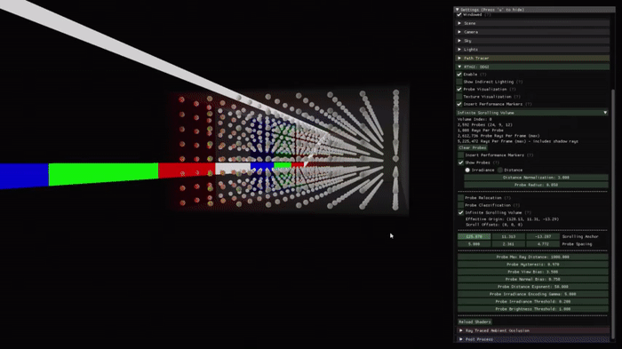
来源：docs/images/ddgivolume-movement-isv.gif；docs/DDGIVolume.md:686-716
应用每帧调用 SetScrollAnchor() 给出一个世界坐标，volume 会尽量把
active space 的有效原点推到该位置。实际推进发生在 DDGIVolume::Update() 中
（DDGIVolume.cpp:104-110）：若 movementType 为 Scrolling，
则调用 ComputeScrolling()。
ComputeScrolling() 先求"有效原点"到锚点的位移，再把位移量化成整数格：
float3 translation = m_probeScrollAnchor - GetOrigin();
m_probeScrollDirections =
{ Sign(translation.x), Sign(translation.y), Sign(translation.z) };
int3 scroll =
{
rtxgi::AbsFloor(translation.x / m_desc.probeSpacing.x),
rtxgi::AbsFloor(translation.y / m_desc.probeSpacing.y),
rtxgi::AbsFloor(translation.z / m_desc.probeSpacing.z),
};
if (scroll.x != 0) { m_probeScrollOffsets.x += scroll.x; m_probeScrollClear[0] = true; }
if (scroll.y != 0) { m_probeScrollOffsets.y += scroll.y; m_probeScrollClear[1] = true; }
if (scroll.z != 0) { m_probeScrollOffsets.z += scroll.z; m_probeScrollClear[2] = true; }
来源：rtxgi-sdk/src/ddgi/DDGIVolume.cpp:399-438
三个要点：
GetOrigin() 是有效原点，而不是 desc.origin。
对滚动 volume 它返回 desc.origin + scrollOffsets × probeSpacing
（DDGIVolume.cpp:211-218）。所以位移是相对当前位置算的，
每帧只累加增量，不会重复计入。
AbsFloor 是向零取整：value >= 0 ? floor(value) : ceil(value)
（src/Math.cpp:29-32）。位移不足一格时不推进。
Sign），因为后面清层要用到它。
GPU 侧不使用网格坐标直接寻址，而是先加偏移、再对探针数取模
（ProbeIndexing.hlsl:287-290）：
int DDGIGetScrollingProbeIndex(int3 probeCoords, DDGIVolumeDescGPU volume)
{
int3 coords = (probeCoords + volume.probeScrollOffsets + volume.probeCounts)
% volume.probeCounts;
return DDGIGetProbeIndex(coords, volume);
}
先加 probeCounts 再取模，是为了处理负偏移 —— HLSL 的 %
结果符号跟被除数一致，负数直接取模会得到负值。
于是探针纹理成了一段环形缓冲区：网格坐标 g 读到的存储槽 随偏移推进而改变，走到末端后绕回开头。这也解释了滚动为什么不需要搬运数据 —— 改变的只是"哪个网格坐标读哪个存储槽"这一层映射。
绕回意味着某个存储槽会被要求提供一个它从未计算过的世界位置的数据，该槽必须清零。
判断全在 DDGIClearScrolledPlane 里（ProbeIndexing.hlsl:295-311）：
if (volume.probeScrollClear[planeIndex]) {
int offset = volume.probeScrollOffsets[planeIndex];
int probeCount = volume.probeCounts[planeIndex];
int direction = volume.probeScrollDirections[planeIndex];
int coord = 0;
if (direction) coord = (probeCount + (offset - 1)) % probeCount; // 正方向
else coord = (probeCount + (offset % probeCount)) % probeCount; // 负方向
if (probeCoords[planeIndex] == coord) return true;
}
return false;
两点值得注意：
probeCoords 是存储坐标，来自
DDGIGetProbeCoords(probeIndex, volume)
（ProbeBlendingCS.hlsl:372），不是滚动后用于世界位置的网格坐标。
所以判断完全不需要几何信息，只凭偏移与方向即可算出。
ComputeScrolling() 每个轴每次最多置一个 probeScrollClear 标志，
因此每步最多清零一层。
清零发生在混合阶段（ProbeBlendingCS.hlsl:376-385）：命中被清零层的探针，
本帧直接写入 float4(0, 0, 0, 1) 并提前返回，既不混合也不读历史值。
此后它从零重新累积 —— 这正是"重新收敛"的含义。irradiance 与 distance
两张纹理都会走这条路径。
scroll 可以大于 1。若锚点在一次更新之间移动了 k 格，偏移量会一次加到
offset + k，但清零标志只有一个。此时新失效的存储槽有 k 个，
却只有 (offset + k − 1) mod counts 这一个被清零，
其余 k − 1 个会带着旧位置的数据继续参与着色，直到下一轮绕回才被处理。
缓步移动（每次更新最多一格）时不会出现这一情况，每步恰好只新产生一层失效。 这也是把 volume 锚定到相机或角色这类连续运动的用法更常见的原因。
偏移量打包进常量缓冲时要压成每轴 15 位有符号数
（DDGIVolume.cpp:185-187），一直累加必然溢出。
因此 ComputeScrolling() 开头会先调用 ScrollReset()：
if (m_probeScrollOffsets[planeIndex] != 0 &&
(m_probeScrollOffsets[planeIndex] % m_desc.probeCounts[planeIndex] == 0))
{
m_desc.origin[planeIndex] += ((float)m_desc.probeCounts[planeIndex]
* m_desc.probeSpacing[planeIndex]) * (float)m_probeScrollDirections[planeIndex];
m_probeScrollOffsets[planeIndex] = 0;
}
来源：rtxgi-sdk/src/ddgi/DDGIVolume.cpp:390-394
偏移量达到探针数的整数倍时，把这一段距离加进 origin，偏移量归零。
这是纯粹的重参数化：origin + offsets × probeSpacing 的值不变，
探针的世界位置不变，取模映射也不变（模 probeCounts 下两者等价），
只是换一种写法避免溢出。
IsVolumeMovementScrolling() 判断
（ProbeCommon.hlsl:40、ProbeIndexing.hlsl:142、
Irradiance.hlsl:86）。文档也明确说明滚动 volume 忽略旋转变换。
SetOrigin()
平移 volume 即可，与滚动逻辑互相独立。
能说明每项优化解决的具体问题或其节省的开销。
仓库的文档按写作目的可分为三类。以下分类为本文作者的归纳，非仓库官方说明。
| 类别 | 文件 | 面向的读者 |
|---|---|---|
| 选型 | Algorithms.md；Integration.md 的大部分 |
评估是否采用该技术的开发者 |
| 原理 | Math.md；DDGIVolume.md:686-809 |
需要理解算法本身的读者 |
| 集成 | ShaderAPI.md；shader 源码 |
需要动手接入的开发者 |
该文件共 37 行，属于选型文档，不包含算法描述。其实际内容为四点：
一、预计算探针无法处理动态遮挡，导致漏光。
二、DDGI 通过 GPU 光线追踪、快速探针更新与统计遮挡测试解决该问题。
三、局限为光照信号低频、存在时间延迟、显存占用较高。
四、因此适合与 RTAO 配合使用。
若以理解算法为目的阅读该文件，会得到"没有实质内容"的印象。 这不属于理解偏差，而是文档定位不同。
下表把讲义每一章映射到仓库中的具体位置。行号为本地 v1.3 分支实测， 供直接定位。若之后的版本改动过文件，位置会偏移。
| 讲义 | 仓库位置 | 读什么 |
|---|---|---|
| 00 | docs/Algorithms.md | 全 37 行。只作背景阅读 —— 它是选型文档，不含算法描述 |
| 01–02 | docs/Algorithms.md | 同上。注意"局限"那一段对低频与延迟的表述 |
| 03 | docs/Math.md:3-30 | Irradiance 一节：radiance 与 irradiance 的定义与量纲 |
| 04 | docs/Math.md:31-81 include/Common.hlsl:55-63 include/ProbeRayCommon.hlsl:113-134 ProbeBlendingCS.hlsl:400-561 |
蒙特卡洛估计量、方向生成、光线数据的写入与累积。本讲义最重的一章 |
| 05 | include/ProbeOctahedral.hlsl | 全 75 行，只有正映射与逆映射两个函数，可以直接读完 |
| 06 | Irradiance.hlsl:65-204 include/ProbeIndexing.hlsl:136-155 |
查询入口的完整函数，以及 8 探针的定位方式 |
| 07 | docs/DDGIVolume.md:718-734 | Relocation 一节的动机部分（漏光的两种成因） |
| 08 | Irradiance.hlsl:131-141 ProbeBlendingCS.hlsl:470-502 |
距离图的读取与写入，含 2.f * 那个因子的来源 |
| 09 | Irradiance.hlsl:142-157 | 共 16 行，Chebyshev 权重的全部实现 |
| 讲义 | 仓库位置 | 读什么 |
|---|---|---|
| 10 | docs/DDGIVolume.md:474-652 include/ProbeIndexing.hlsl:23-236 DDGIVolumeDescGPU.h:47-80 |
纹理布局、索引算术、打包后的常量结构 |
| 11 | ProbeBlendingCS.hlsl:505-561 | hysteresis 与两项自适应调整。注意 probeHysteresis 是旧值的权重 |
| 12 | docs/Integration.md:13-90 samples/test-harness/shaders/ddgi/ProbeTraceRGS.hlsl samples/test-harness/shaders/IndirectCS.hlsl:75-108 |
更新侧与查询侧的完整链路。从这里开始才需要看 samples 目录 |
| 13 | docs/DDGIVolume.md:686-809 ProbeRelocationCS.hlsl ProbeClassificationCS.hlsl ReductionCS.hlsl src/ddgi/DDGIVolume.cpp:390-482 |
四项优化各自的着色器，以及 CPU 侧的驱动逻辑。第一次需要读 C++ |
| 14 | — | 本章即为路线图 |
| 15 | docs/QuickStart.md samples/test-harness/config/*.ini |
编译运行，然后按讲义第 15 章改配置做实验 |
| 16 | ChangeLog.md | 查某个机制何时加入、有没有被修过 |
DDGIVolume.md。
它共 810 行，其中大半是 API 说明与资源绑定样板。只有 686-809 是机制描述，
用 sed -n '686,809p' docs/DDGIVolume.md 取这一段即可。
Math.md 放在最后读。
它只有 81 行，是第 03、04 两章的浓缩形式。先有讲义打底再读它，能起到校验作用。
反过来先读会看不懂。
.hlsl，不碰 C++。
算法全在 rtxgi-sdk/shaders/ 下，约 2600 行。
C++ 侧（DDGIVolume.cpp 519 行）主要是资源管理与驱动，
到第 13 章才需要看。
samples/test-harness/ 到第 12 章再碰。
那是宿主渲染器的示例实现，不是算法本身。
第 12 章之前读它只会被光线追踪的管线代码分散注意力。
按内容量，建议分成七次：
| 次序 | 讲义章节 | 配套源码 | 工作量 |
|---|---|---|---|
| 1 | 00–03 | Algorithms.md（37 行） Math.md:3-30 | 轻 |
| 2 | 04–05 | Common.hlsl ProbeRayCommon.hlsl ProbeOctahedral.hlsl | 重 |
| 3 | 06–09 | Irradiance.hlsl（206 行，可整读） | 中 |
| 4 | 10–11 | ProbeIndexing.hlsl ProbeBlendingCS.hlsl | 中 |
| 5 | 12 | Integration.md:13-90 IndirectCS.hlsl | 轻 |
| 6 | 13 | DDGIVolume.md:686-809 三个优化的 CS DDGIVolume.cpp:390-482 | 重 |
| 7 | 15–16 | QuickStart.md config/*.ini | 需要可运行环境 |
第 2 次和第 6 次最重，可以再拆。第 12 章之后可以停一下 —— 此时已能完整解释 DDGI 的每一帧在做什么，剩下的都是优化。
能说明三类文档各自的定位，并判断以理解原理为目的时应阅读哪一类。
以下实验需要 Windows 或 Linux 环境，以及支持 DXR 或 Vulkan Ray Tracing 的 GPU。 各项实验对应前述章节中的具体机制。
按 docs/QuickStart.md 编译并运行 Test Harness
CMake 会自动下载 DXC 编译器和 D3D12 Agility SDK。 Windows 使用 D3D12 后端，Linux 使用 Vulkan 后端，功能等价。
关闭 probe relocation，观察漏光
关闭后，墙角与家具内部会出现错误的亮斑，来源是位于几何体内部的探针。
仓库提供了 ddgivolume-relocation-on.jpg 与
-off.jpg 对比图。
减少每个探针的光线数，观察噪声变化
降低光线数后画面噪声增加，对应第 04 章中蒙特卡洛估计的方差。 同时可观察第 11 章的时间累积对该噪声的抑制效果。
调整 probeHysteresis，观察响应速度与稳定性的权衡
提高该值画面更稳定，但光照变化后收敛更慢。降低则相反。 该参数在不同场景配置中均为 0.97。
调整 probeSpacing，观察显存占用与光照精度的权衡
间距过大会丢失光照细节，过小则显存与计算量显著增加。 各场景配置中的取值差异较大（0.3 至 11 米），可与场景尺度对照观察。
使用 DDGIVisualizations 查看探针纹理
将 irradiance、distance、probe data 纹理直接显示。 可用于核验第 05 章中八面体映射的实际排布，包括展开接缝的位置与形态。
与路径追踪结果对比
PathTraceRGS.hlsl 是完整的路径追踪实现，可作为参考解。
在同一场景与视角下切换两者，可直接观察第 01 章所述方差的具体表现，
以及 DDGI 在低频光照上的近似程度。
本讲义前面的内容覆盖 DDGI 本身。这一章列出可以继续阅读的材料。
DDGI 的后续工作是 Majercik 等人 2022 年的 Dynamic Diffuse Global Illumination Resampling。 两篇论文的第一作者相同。
该论文不修改探针的数据结构。八面体映射、Chebyshev 可见性、探针网格插值、 时间累积与 relocation 都沿用本讲义第 05 至 13 章的内容。改动有两处：
论文把本讲义讲的做法称为 "Primary DDGI"。该方法在论文中与其余四种方法一并比较。
拓展篇《ReSTIR 与 DDGI Resampling》讲解这篇论文， 以及论文所用的重采样机制。该机制出自 Bitterli 等人 2020 年的 ReSTIR。 拓展篇的第一部分只讲重采样，与探针无关，可以单独阅读。
拓展篇第 06 章用到本讲义第 03 章的结论：探针只记录两次及以上漫反射的能量， 不含自发光、直接光与光泽。
拓展篇第 08 章用到本讲义第 06 至 09 章的内容：探针网格、插值与可见性判断。
本讲义第 03 至 09 章尚未读完时，先读本讲义。
docs/ 目录中的其他论文| 文件 | 标题与出处 | 说明 |
|---|---|---|
| 2108.05263v1.pdf | Dynamic Diffuse Global Illumination Resampling Majercik 等，CGF 41(1), 2022 |
DDGI 的后续工作。见拓展篇第二部分。 |
| ReSTIR.pdf | Spatiotemporal reservoir resampling for real-time ray tracing with dynamic direct lighting Bitterli 等，TOG 39(4), 2020 |
重采样机制的出处。见拓展篇第一部分。 |
| 2007.14394v1.pdf | Signed Distance Fields Dynamic Diffuse Global Illumination Hu 等，arXiv 2020 |
第三方工作。用有符号距离场代替探针网格，文中把 RTXGI 作为对比基线。 |
| 654238435.pdf | Dynamic Voxel-Based Global Illumination Cosin Ayerbe 等，CGF 44(1), 2025 |
第三方工作。体素化的单次漫反射弹射方案，与基于探针网格的做法是两种选择。 |
docs/ReSTIR.pdf 与 docs/2108.05263v1.pdf 核对细节。第 14 章给出的仓库文档阅读顺序与这条路线不冲突，可以同时进行。
能说明 DDGI Resampling 改动的是哪两处。能说出 docs/ 中四篇论文各自的内容。